这一课和第 3 课正好反过来：第 3 课是「这个场合说什么」，这一课是「这句话什么时候说」。课本给 20 句英语母语者天天挂在嘴边的短句，每句配一张画 —— 有意思的是，这些画大多是把习语画成字面意思来开玩笑：Are you pulling my leg? 就真的画成有人在拉腿。看懂这个梗，你就记住这句了。
课本 p.18–23
20 个短句
情境描述为主
01先把回答的骨架搭好
题目问 When do you say this?，你要答的是场合，不是意思。所以别一上来就翻译成中文，直接描述一个画面：谁、在哪、发生了什么、你会脱口而出这句话。
设定场景 — 谁和谁、在哪Say you run into an old classmate you haven't seen for years…
说出这句话 — 直接用…you'd just say, "Long time no see!"
补一句语气或变体 — 显示你懂语感It's casual — you wouldn't say it to your professor. With them I'd say, "It's been a while."
用 Say you… 开头。这是英语里开启一个假设场景最省事的说法：Say you're at a restaurant and the waiter brings the wrong dish… 比 When I am in a restaurant and… 自然得多，而且一说出来老师就知道你要讲故事了。
What you seeA yellow convertible driving past a crowd of friends who are cheering and throwing confetti. The car is decorated with flowers — it's a wedding.
When you say it任何人家有喜事的时候：毕业、获奖、找到工作或升职、结婚、生孩子。
Say it like thisAny time someone's accomplished something worthwhile — they graduated, they won an award, they got a job or a promotion, they got married, or they had a baby. And you can be more specific: "Congratulations on the new job" sounds warmer than just "Congratulations".
课本那段的措辞也值得抄走
表达
意思 / 用法
accomplish something worthwhile
做成了值得的事。worthwhile = 值得花时间的，比 good 精确
win an award
获奖。奖项用 award，奖金用 prize 或 cash prize
get a promotion
升职。动词用 get，不用 take
get married / have a baby
结婚 / 生孩子。都是固定搭配，不用 marry with 或 born a baby
Anytime someone…
「凡是有人……的时候」。anytime 在这里作连词用，口语很常见
04二十句话：什么时候说，怎么讲清楚
每张卡三段：What you see 先看画（很多画的是字面意思，是个玩笑），When you say it 给场合和语气，Say it like this 是可以直接念出口的完整回答。
01
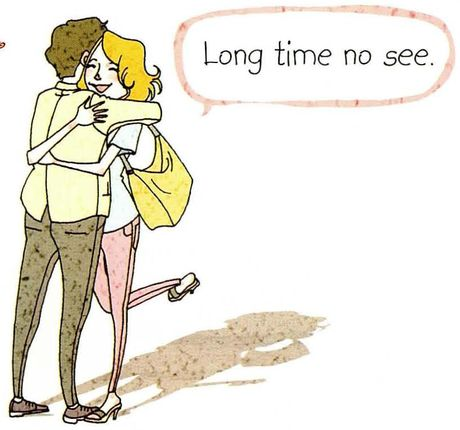
Long time no see.
What you seeTwo people hugging, one of them so happy they've lifted a leg off the ground. Classic reunion energy.
When you say it好久不见。遇到很久没见的熟人，见面第一句。
Say it like thisSay you bump into an old classmate you haven't seen in years — you'd just say "Long time no see!" It's really casual, so it's fine with friends. With someone older or more formal, "It's been a while" works better.
02
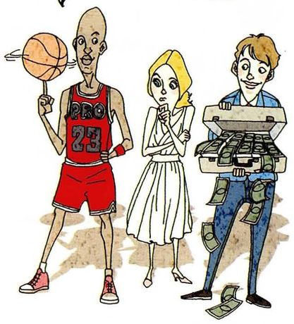
It's up to you.
What you seeThree very different people standing side by side: a basketball player, a woman in a white dress, and a man whose pockets and cash box are stuffed with money. They're the choices.
When you say it你决定吧 / 随你。别人让你拿主意，你不想拿，或者真的无所谓。
Say it like thisSay a friend asks where to eat tonight and you genuinely don't mind — "It's up to you." It's polite, but be careful: if someone asks you to make a real decision and you keep saying it, you sound like you don't care.
03
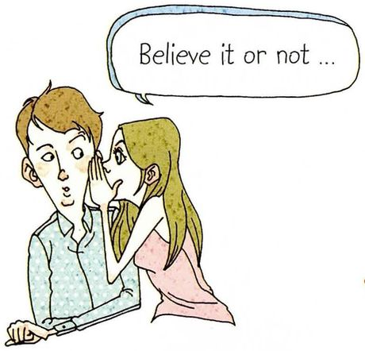
Believe it or not…
What you seeA woman whispering into a man's ear, and his eyes have gone wide. She's telling him something he won't believe.
When you say it信不信由你。要说的事出乎对方意料，先垫一句。
Say it like thisYou use it right before something surprising: "Believe it or not, I've never been on a plane." It's a bit of a hook — you're warning them the next sentence is going to be strange.
04
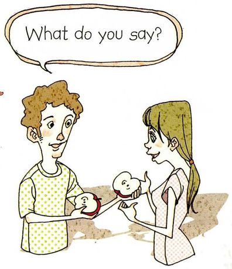
What do you say?
What you seeA man holding something out toward a woman, waiting for her reaction. He's asking for her opinion.
When you say it你觉得怎么样？征求意见。也用来提醒孩子说「谢谢」。
Say it like thisTwo very different uses. With an adult, it means "what's your opinion?" — "I'm thinking of buying this. What do you say?" With a child, it means "say thank you". Same words, totally different tone.
05
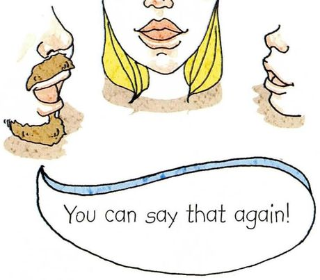
You can say that again!
What you seeTwo faces and an exclamation mark — the visual equivalent of emphatic agreement.
When you say it太对了 / 我完全同意。语气热烈，朋友之间用。
Say it like thisIt means "I completely agree", not "please repeat that". So if a friend says "This semester is killing me," you'd answer "You can say that again!" It's warm and informal — don't use it with a professor.
06
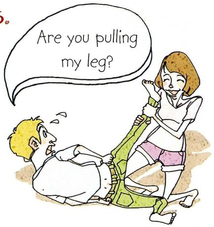
Are you pulling my leg?
What you seeA woman is literally pulling a man's leg. This picture is a joke — it takes the idiom at face value.
When you say it你在逗我吧？对方说的话你不信，但语气是玩笑的。
Say it like thisUse it when someone tells you something that sounds like a joke: "You got into that program? Are you pulling my leg?" It's friendly — you're not accusing them of lying, you're saying you're impressed.
07
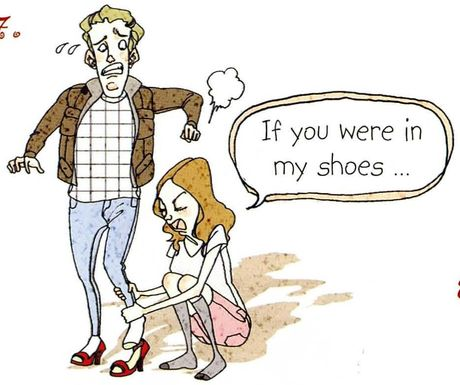
If you were in my shoes…
What you seeA woman kneeling down to help a man with his shoes. Again a literal joke: in my shoes means "in my situation".
When you say it你要是换我，你会怎么办。请对方设身处地。
Say it like thisYou use it when someone's judging your decision without knowing the details: "If you were in my shoes, what would you do?" It's a way of asking for understanding rather than arguing.
08
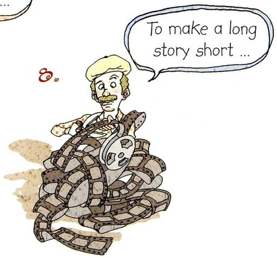
To make a long story short…
What you seeA man tangled up in a long strip of film — the "long story" made physical.
When you say it长话短说。要说的经过太啰嗦，直接跳到结论。
Say it like thisWhen you've started explaining something and realize it's taking forever: "To make a long story short, we missed the train and had to sleep at the station." It's a very useful phrase — it buys you a way out of a messy explanation.
09
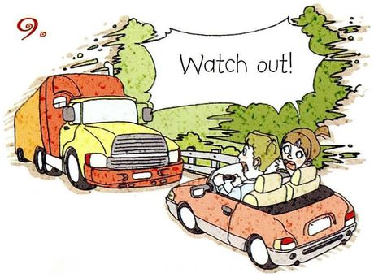
Watch out!
What you seeA huge truck coming straight at a small open-top car. The crash is a split second away.
When you say it小心！当心！紧急提醒，没有时间说完整句子。
Say it like thisIt's what you shout when someone's about to get hurt — a car, a falling glass, a puddle. You don't say "Be careful" in that moment; it's too long. "Watch out!" is two syllables and it stops people.
10
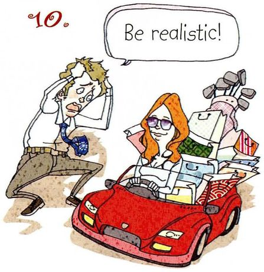
Be realistic!
What you seeA man clutching his head while a woman sits surrounded by shopping bags and a credit card machine. He's doing the maths; she isn't.
When you say it现实一点吧。对方的要求或期待不切实际。
Say it like thisWhen someone's expectations are way off: "You want a two-bedroom apartment in that area for that price? Be realistic." It's blunt, so it lands much softer if you add "I'm just being realistic" rather than saying it alone.
11
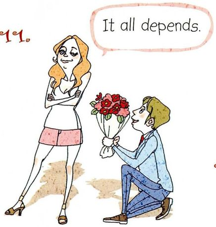
It all depends.
What you seeA man kneeling with a bouquet, and a woman looking away with her arms folded. She's not saying yes, and she's not saying no.
When you say it看情况。答案取决于前提条件，现在不能一口答应。
Say it like thisIt's the polite version of "I can't answer that yet": "Are you going back home after graduation? It all depends — on whether I get a job here." Always add the "on what" part if you can; alone it sounds evasive.
12
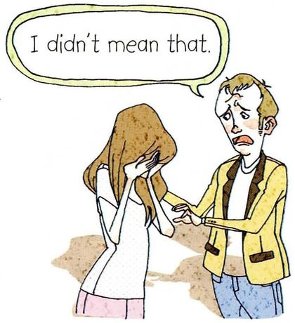
I didn't mean that.
What you seeA woman with her face in her hands, and a man reaching for her arm with a pained expression. Something went badly wrong.
When you say it我不是那个意思。话说出口才发现被误解了，赶紧补救。
Say it like thisUse it immediately after you've been misunderstood: "I didn't mean that — what I meant was…" and then actually explain. Just saying it and stopping makes it worse, because it sounds like a way of avoiding responsibility.
13
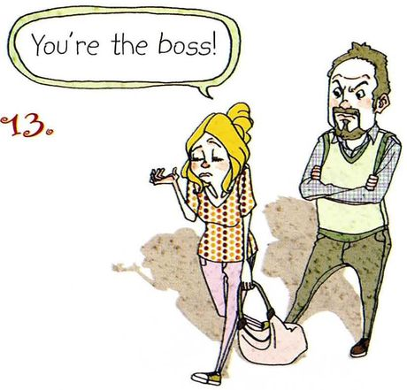
You're the boss!
What you seeA woman half-shrugging with one hand out, next to a man standing with his arms crossed, looking displeased. She's conceding.
When you say it你说了算 / 听你的。半开玩笑地让步，通常有点勉强。
Say it like thisIt's a light way of giving in: "Fine, we'll do it your way — you're the boss." Don't use it with an actual manager unless you're joking, because it can sound sarcastic.
14
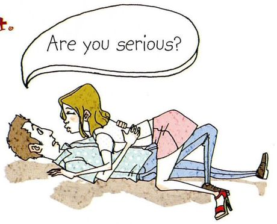
Are you serious?
What you seeTwo people on the ground, one lying across the other, both looking up with wide eyes. Pure disbelief.
When you say it你认真的吗？听到难以置信的话时的第一反应。
Say it like thisIt's the reflex reaction to something shocking: "Are you serious? You quit your job?" Tone matters a lot here — flat and low means you're worried; high and rising means you're excited.
15
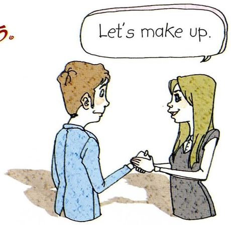
Let's make up.
What you seeA man and a woman shaking hands and smiling at each other. Something has just been resolved.
When you say it我们和好吧。吵架之后主动示好。
Say it like thisAfter an argument, when you want to end it: "Come on, let's make up." It's warm and a bit childlike — which is why it works, because it takes the seriousness out of the fight.
16
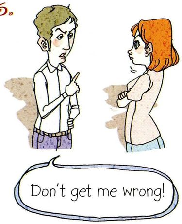
Don't get me wrong!
What you seeA man with one finger up, mid-explanation, and a woman with her arms crossed, not buying it yet.
When you say it别误会我。要说的话可能听着不中听，先打个预防针。
Say it like thisYou use it before a critical comment: "Don't get me wrong, I like the idea — I just don't think it'll work with our budget." It signals that the next sentence isn't an attack.
17
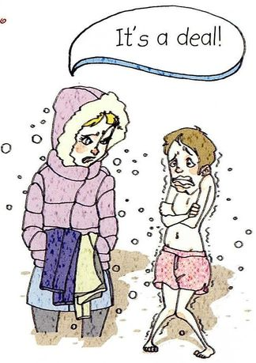
It's a deal!
What you seeOne person bundled up in a thick coat, the other shivering in summer clothes, and they're making an exchange. A trade is happening.
When you say it成交 / 就这么说定了。双方谈妥条件，一口答应。
Say it like thisIt closes a negotiation, big or small: "You drive, I'll pay for the petrol. It's a deal!" With a handshake it's a bit formal; in a text message people just write "deal".
18
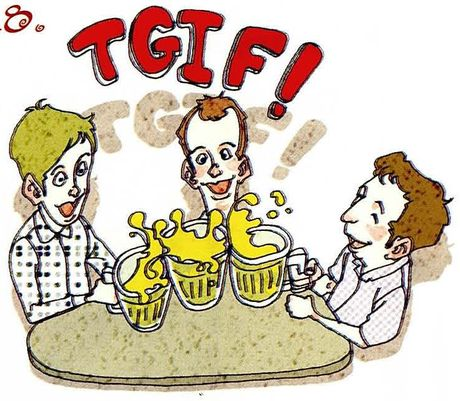
TGIF!
What you seeThree friends raising glasses of beer, and the letters TGIF written above in big letters.
When you say itThank God It's Friday. 周五下班 / 放假的欢呼。
Say it like thisIt stands for "Thank God It's Friday" — you say it on Friday afternoon when the working week is over. It's said in offices everywhere, and it's usually written rather than spoken, in a group chat at about five o'clock.
19
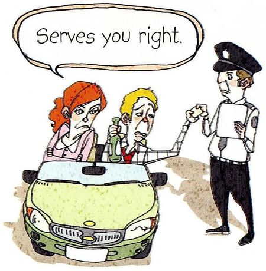
Serves you right.
What you seeA police officer handing a ticket to a fuming couple in a car. They've been caught.
When you say it活该 / 自找的。对方自己惹的麻烦，你觉得不值得同情。
Say it like thisWhen someone's complaining about a problem they caused: "I got a parking ticket." "Serves you right — you parked on the pavement." It's harsh; say it only to people close enough to take it.
20
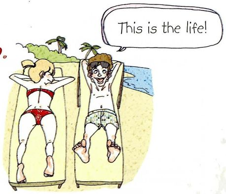
This is the life!
What you seeTwo people stretched out on sun loungers on a beach, with palm trees and the sea behind them. Nobody's working.
When you say it这才是生活！正享受着舒服的时刻。
Say it like thisYou say it when a moment is genuinely pleasant — a beach, a good meal, a long weekend with nothing to do. It's always said with a sigh of contentment, which is hard to fake.
05重点词汇（美式音标）
这一课的核心是 20 个整块句子，下面的词是从句子里拆出来的、你可能单独说不出来的部分。
A · 句子里的难词
词
音标
课上怎么用
中文
realistic
/ˌriːəˈlɪstɪk/
Be realistic. / a realistic budget 反义 unrealistic，「不切实际的」
现实的
depend
/dɪˈpend/
It all depends on the weather. 依赖的对象加 on，别漏
取决于
promotion
/prəˈmoʊʃn/
get a promotion / be promoted
升职
accomplish
/əˈkɑːmplɪʃ/
accomplish a goal 比 finish 更有「成就」的意味
完成、实现
worthwhile
/ˌwɜːrθˈwaɪl/
a worthwhile experience
值得的
confetti
/kənˈfeti/
throw confetti at the wedding
彩色纸屑
ticket
/ˈtɪkɪt/
get a parking ticket 第 19 题里是「罚单」，不是车票
罚单 / 票
B · 从这些句子里拆出的高频块
表达
音标
用法
中文
bump into sb
/bʌmp ˈɪntuː/
碰巧遇到某人。run into 同义，都口语
偶遇
It's been a while.
/ɪts bɪn ə waɪl/
好久不见的正式版本
有一阵子没见了
in sb's shoes
/ɪn ˈsʌmbədiz ʃuːz/
设身处地。「你要是我」
站在某人的角度
take the seriousness out of
/teɪk ðə ˈsɪriəsnəs aʊt əv/
让某事不那么严肃。很实用的抽象搭配
消解严肃气氛
crack a joke
/kræk ə dʒoʊk/
开个玩笑。动词用 crack，不用 make
说笑
back off
/bæk ɔːf/
别咄咄逼人 / 退一步
退让
give in
/ɡɪv ɪn/
让步。和 You're the boss 是一套的
妥协
06老师大概率会问的问题
这一课老师很可能会让你「用一句本课的句子回应一个情境」。提前想好你自己的生活素材，比背句子有用。
When do you say "Long time no see"?
Say you're walking through the supermarket and you suddenly see your old roommate from undergrad. You'd stop dead and go, "Long time no see!" Then usually you'd add "How have you been?" — because the first line is really just an opener.
Probably "Serves you right." I know exactly when people use it, but in my culture we wouldn't say that out loud to someone's face — it's too harsh. I'd think it, but I'd say something softer, like "That's rough."
「知道但不用 + 说明你会改说什么」，这是最有说服力的答法。它同时证明你懂意思和懂分寸。
Is "Long time no see" actually correct English?
Funny you ask — it's one of the few expressions in English that actually came from Chinese. It started as a literal translation and native speakers just picked it up. So it's completely normal now, but a hundred years ago it would have sounded broken.
这是本课最讨喜的一个知识点，老师几乎一定会接话。Funny you ask 是很好的过渡语。
How would you say "You can say that again" in a formal situation?
I'd say "I couldn't agree more" or "That's exactly how I see it." Both are still warm but they don't sound like you're in a pub. In a meeting I'd probably say "I think you've put your finger on it" — that one's quite elegant.
put your finger on it（说到点子上了）是很地道的会议表达，用出来会有加分效果。
Tell me about a time you had to say "Be realistic" to someone.
My cousin wanted to apply to ten PhD programs in one year, all abroad. I said, "Be realistic — you can't write ten different research proposals before the deadline." He wasn't happy, but he cut it down to four. And honestly, four was still too many.
被要求讲故事时，一定要有具体数字和细节（ten、four、「still too many」）。抽象的回答在这类题里是无效的。
What does "This is the life" mean, and when would you say it?
It means basically "life doesn't get better than this". You say it lying on a beach, or after a really good meal, or on the first morning of a long holiday. It's always said with a kind of satisfied sigh — you can't say it while you're stressed.
life doesn't get better than this 是这句的准确释义。最后那句 you can't say it while you're stressed 说明你理解的是语感而不只是意思。
07这节课最容易犯的错
这一课的错误几乎全是「把中文字面翻过去」。这些句子的意思和字面差得远，硬翻一定翻错。
✗You can say that again. 用来请人重复 ✓Could you say that again? 才是请人重复
本课第 5 句是「完全同意」。请人重复一定要用 could/can you say that again 的问句形式。这两个一混，会闹笑话。
✗It's up to you to decide it. ✓It's up to you. / The decision is up to you.
up to you 后面不用再加 to decide，意思重复了。真要说完整就是 the decision is up to you。
✗It depends on it all. ✓It all depends.
all 放中间修饰 depends，不是放句尾。而且 It all depends 后面如果不接条件，就作为独立一句说完。
✗Watch out! You should be careful! 两个连在一起说 ✓Watch out!
紧急时刻只说两个词。Watch out 是喊出来的，句子一长就来不及了，反而不自然。
✗To make a long story short, finally we... ✓To make a long story short, we missed the train.
这个短语后面直接给结论，不要加 finally、at last 这类词，它们和「短说」的功能重复。
✗I didn't mean this. ✓I didn't mean that.
指「刚说出口的那句话」用 that，不用 this。这是英语指代的一个小习惯：已经说完的在心理上「远」，用 that。
✗Are you making fun with me? ✓Are you making fun of me?
make fun 后面接 of，不是 with。而且这句是「你在取笑我」（带恶意），和 pulling my leg（开玩笑，友好）不一样。
✗Congratulations for your graduation. ✓Congratulations on your graduation.
congratulations 后面固定接 on。这个介词错了非常明显。
08五十分钟怎么用
20 句全背不现实，而且没必要 —— 有些句子（TGIF、Serves you right）你一年也用不上一次。
课前 10 分钟：只背第 02 节五类里的「打招呼」和「收场」问候 2 句 + 收场 3 句，一共 5 句，是全课使用频率最高的。Long time no see / It's been a while / To make a long story short / It all depends / It's a deal。